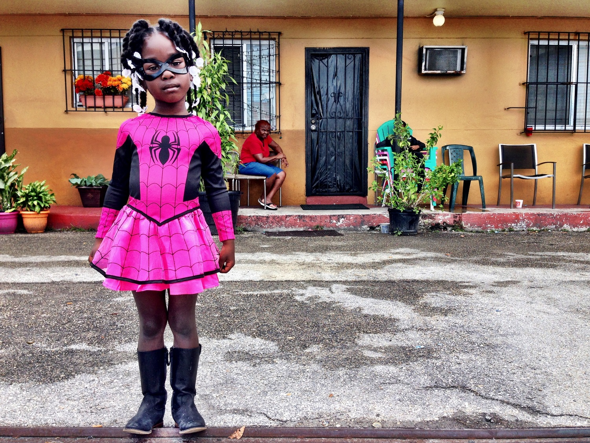

The Florida Project
Directed by Sean Baker
About this project
Sean Baker's forthcoming feature, the Florida Project stars Willem Defoe and newcomer Bria Vinaite.
The film has a social aspect and we wanted to integrate this into an interactive website for the film where viewers had the opportunity to engage with current events around the issue of homelessness